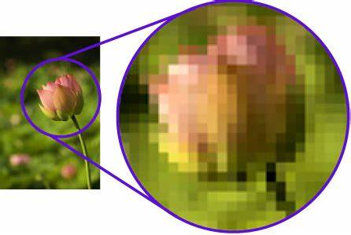
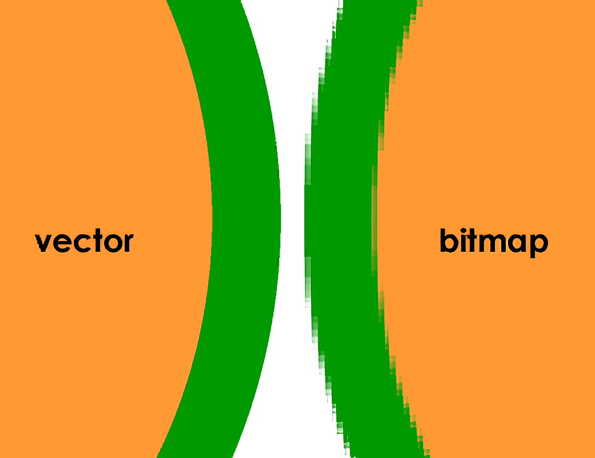

Je kunt op verschillende manieren een afbeelding opslaan, twee daarvan zijn Vectors en Bitmaps. Bitmaps bestaan uit pixels (lees hier meer over in Kleurmodellen), zo'n afbeelding wordt helemaal opgevult met pixels met een specefieke kleur. De hoeveelheid pixels in een afbeelding wordt de 'resolutie' genoemd. Deze wordt bijvoorbeeld vaak uitgedrukt als 1080 x 720, wat het aantal pixels per zijde uitdrukt. De resolutie hangt af van waarvoor de afbeelding gebruikt wordt of op welk apparaat het geladen wordt, een smartphone heeft typisch een resolutie van 320 bij 480. Het nadeel van Bitmaps is dat wanneer je de foto vergroot, de kwaliteit vermindert. Dit komt doordat de gekleurde pixels dan zichtbaarder worden waardoor de vormen in de foto er uit zullen zien als gekleurde vierkantjes. Vector heeft dit probleem daarentegen niet. Vector afbeeldingen bestaan uit punten waartussen lijnen getrokken worden. Bij bewerking van een afbeelding worden die punten herberekend door de computer, waardoor er bij vergroting geen kwaliteit verloren raakt. Vector heeft daarentegen ook een aantal nadelen. Een vector kan bijvoorbeeld alleen uit abstracte vormen en lijnen bestaan, waardoor er minder details in kunnen zitten. Dit zie je hieronder
 